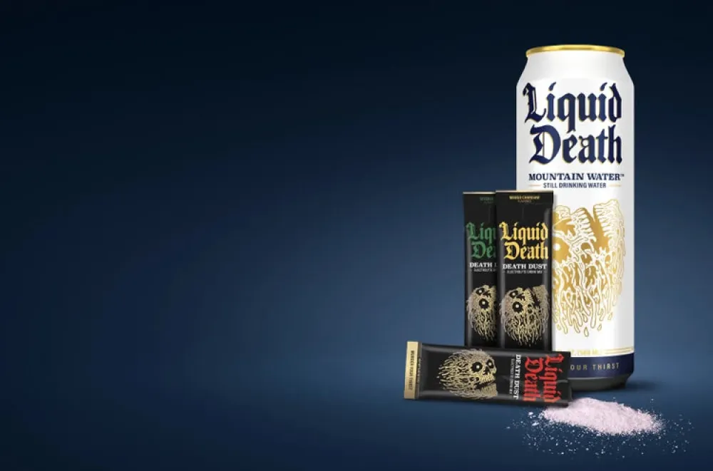
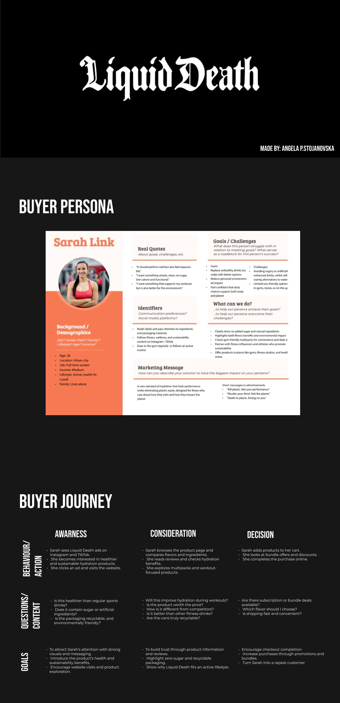
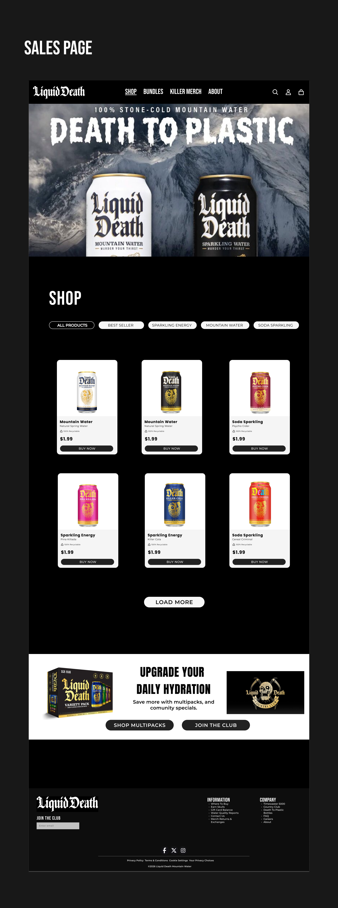
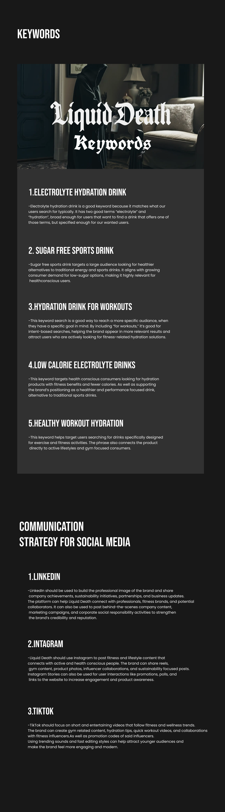

Liquid Death
Brand Strategy & Redesign
Overview
This project focuses on creating a complete marketing campaign for Liquid Death, a brand known for its unconventional approach to the beverage industry. The goal was to analyze the brand's identity, customer journey, communication strategy, and digital presence while developing visual content that aligns with its bold and rebellious personality.

To better understand the target audience, a detailed buyer persona was developed based on demographics, interests, behaviors, and purchasing habits. This research helped identify the motivations behind consumer engagement and provided a foundation for all marketing decisions throughout the project.

The sales page was examined to evaluate its user experience, product presentation, and conversion-focused design elements. The analysis explored how the website communicates the brand's identity while encouraging users to browse products and complete purchases.

A keyword strategy was developed to identify relevant search terms that support brand visibility and online discoverability. These keywords were selected to align with customer interests, industry trends, and Liquid Death's unique market positioning.A communication strategy was designed to establish a consistent brand voice across social media platforms. The plan focuses on audience engagement, brand awareness, and content themes that reflect Liquid Death's distinctive and humorous marketing style.

A series of promotional visuals were created for various social media platforms, including LinkedIn, Instagram, Instagram Stories, and TikTok. Each design was tailored to platform-specific audiences while maintaining a cohesive visual identity that strengthens brand recognition and engagement.